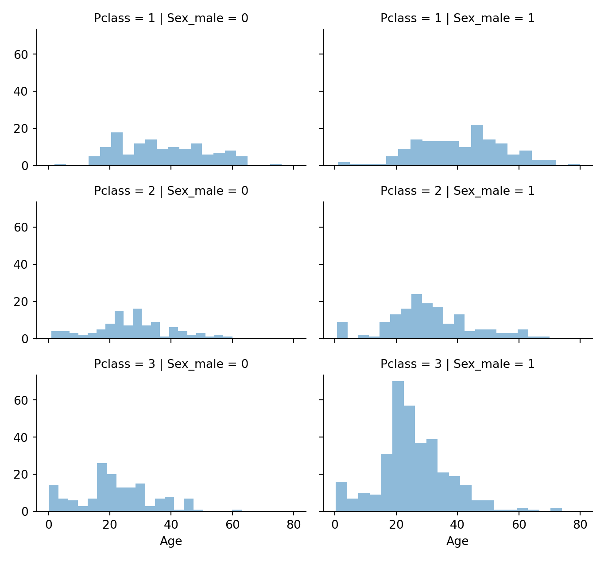
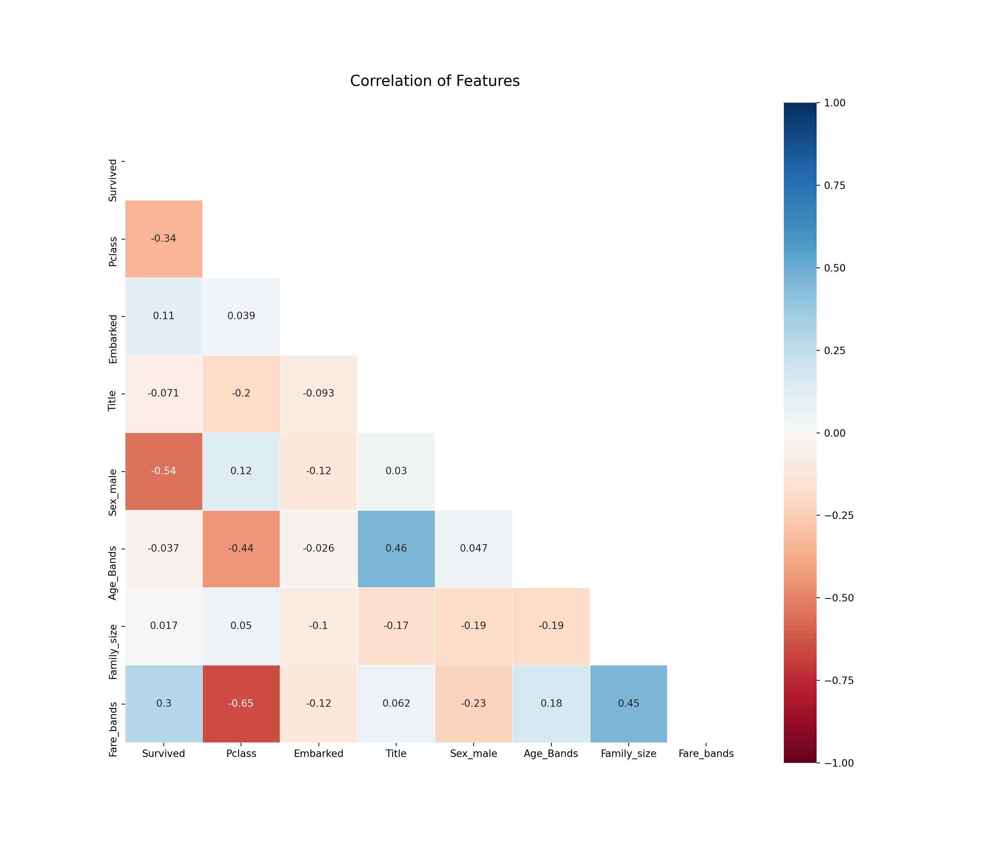

Chapter 5 Titanic
5.1 Setup
Import Packages
Import the data
df_train = pd.read_csv("~/docs/codeing/python/titanic/train.csv")
df_test = pd.read_csv("~/docs/codeing/python/titanic/test.csv")
df = pd.concat([df_train, df_test])
import os
import random as rnd
import matplotlib.pyplot as plt
import numpy as np
import pandas as pd
import seaborn as sns
from sklearn.metrics import (
classification_report,
confusion_matrix,
explained_variance_score,
mean_absolute_error,
mean_squared_error,
)
from xgboost import XGBRegressorprint(
"--------------\n",
"Numeric features \n\n",
df.select_dtypes(include=["float64", "uint8", "int64"]).columns,
"\n--------------\n",
"Categorical features \n\n",
df.select_dtypes(exclude=["float64", "uint8", "int64"]).columns,
)#> --------------
#> Numeric features
#>
#> Index(['PassengerId', 'Survived', 'Pclass', 'Age', 'SibSp', 'Parch', 'Fare'], dtype='object')
#> --------------
#> Categorical features
#>
#> Index(['Name', 'Sex', 'Ticket', 'Cabin', 'Embarked'], dtype='object')print(
"\n--------------\n",
"Distobution of numerical features:\n\n",
df.describe().transpose(),
"\n--------------\n",
"Distobution of categorical features: \n\n",
df.describe(include="O").transpose(),
)#>
#> --------------
#> Distobution of numerical features:
#>
#> count mean std min 25% 50% 75% max
#> PassengerId 1309.0 655.000000 378.020061 1.00 328.0000 655.0000 982.000 1309.0000
#> Survived 891.0 0.383838 0.486592 0.00 0.0000 0.0000 1.000 1.0000
#> Pclass 1309.0 2.294882 0.837836 1.00 2.0000 3.0000 3.000 3.0000
#> Age 1046.0 29.881138 14.413493 0.17 21.0000 28.0000 39.000 80.0000
#> SibSp 1309.0 0.498854 1.041658 0.00 0.0000 0.0000 1.000 8.0000
#> Parch 1309.0 0.385027 0.865560 0.00 0.0000 0.0000 0.000 9.0000
#> Fare 1308.0 33.295479 51.758668 0.00 7.8958 14.4542 31.275 512.3292
#> --------------
#> Distobution of categorical features:
#>
#> count unique top freq
#> Name 1309 1307 Connolly, Miss. Kate 2
#> Sex 1309 2 male 843
#> Ticket 1309 929 CA. 2343 11
#> Cabin 295 186 C23 C25 C27 6
#> Embarked 1307 3 S 914f, ax = plt.subplots(nrows=1, ncols=1, figsize=(12,10))
sns.heatmap(df.isnull(),
yticklabels=False,
cbar=False,
cmap="Blues"
)
ax.set_title('Fields with Missing Values', fontsize=16)
#for tick in ax.xaxis.get_major_ticks():
# tick.label.set_fontsize(14)
for tick in ax.yaxis.get_major_ticks():
tick.label.set_fontsize(14)
plt.savefig("01_missing_data_heatmap")
plt.show()
na_per = np.round((df.isna().sum() / df.count().max()) * 100, 2)
na_count = np.round(df.isna().sum(), 2)
print(
"--------------\n",
"total df count: ",
df.count().max(),
"\n--------------\n",
"missing values count: \n\n",
na_count[na_count != 0],
"\n--------------\n",
"missing values percentage:\n\n",
na_per[na_per != 0],
"\n--------------\n",
)#> --------------
#> total df count: 1309
#> --------------
#> missing values count:
#>
#> Survived 418
#> Age 263
#> Fare 1
#> Cabin 1014
#> Embarked 2
#> dtype: int64
#> --------------
#> missing values percentage:
#>
#> Survived 31.93
#> Age 20.09
#> Fare 0.08
#> Cabin 77.46
#> Embarked 0.15
#> dtype: float64
#> --------------TARGET = "Survived"
plt.figure(figsize=(14, 8))
df.corr()[TARGET].sort_values()[:-1].plot(kind="bar")
plt.savefig("02_correlation_barplot")
plt.show()
plt.figure(figsize=(14, 12))
plt.title('Correlation of Features', y=1.05, size=15)
mask = np.zeros_like(df.corr())
mask[np.triu_indices_from(mask)] = True
sns.heatmap(
df.corr(),
annot=True,
linewidths=0.2,
linecolor='white',
cmap="RdBu",
center=0,
mask=mask,
vmax=1.0,
vmin=-1.0,
square=True,
)
plt.savefig("03_correlation_map")
plt.show()
def pivot_feature(df, TARGET, FEATURE):
"""
Input the
- data frame
- target feature
- relevant feature (only for features which are categorical (Sex),
ordinal (Passenger class) or discrete (Sibbling count)).
"""
return (df[[FEATURE, TARGET
]].groupby([FEATURE]).mean().sort_values(by=FEATURE,
ascending=False))
pivot_feature(df, "Survived", "Pclass")#> Survived
#> Pclass
#> 3 0.242363
#> 2 0.472826
#> 1 0.629630pivot_feature(df, "Survived", "Sex")#> Survived
#> Sex
#> male 0.188908
#> female 0.742038pivot_feature(df, "Survived", "SibSp")#> Survived
#> SibSp
#> 8 0.000000
#> 5 0.000000
#> 4 0.166667
#> 3 0.250000
#> 2 0.464286
#> 1 0.535885
#> 0 0.345395pivot_feature(df, "Survived", "Parch")#> Survived
#> Parch
#> 9 NaN
#> 6 0.000000
#> 5 0.200000
#> 4 0.000000
#> 3 0.600000
#> 2 0.500000
#> 1 0.550847
#> 0 0.343658def plot_corr_numerical(df, TARGET, FEATURE):
"""
Data Frame
Target feature
Feature of intrest
"""
g = sns.FacetGrid(df, col=TARGET)
g.map(plt.hist, FEATURE, bins=20)
plt.savefig("04_corr_numerical_" + TARGET + "_" + FEATURE)
plot_corr_numerical(df, "Survived", "Age")
def plot_corr_num_ord(df, TARGET, numerical_FEATURE, ordinal_FEATURE):
"""
Data Frame
Target feature
numerical feature of intrest
ordinal feature of intrest
"""
g = sns.FacetGrid(df,
col=TARGET,
row=ordinal_FEATURE,
size=2.2,
aspect=1.6)
g.map(plt.hist, numerical_FEATURE, alpha=0.5, bins=20)
g.add_legend()
plt.savefig("04_corr_num_ord_" + TARGET + "_" + numerical_FEATURE + "_" +
ordinal_FEATURE)
plot_corr_num_ord(df, "Survived", "Age", "Pclass")#> /nix/store/lz8yaf1c80c6zb3qj11j58x3qq366wxx-python3.8-seaborn-0.11.0/lib/python3.8/site-packages/seaborn/axisgrid.py:316: UserWarning: The `size` parameter has been renamed to `height`; please update your code.
#> warnings.warn(msg, UserWarning)def plot_corr_cat(
df,
TARGET,
categorical_FEATURE,
categorical_FEATURE_x_axis,
categorical_FEATURE_new_line,
):
"""
Data Frame
Target feature - y axis
categorical feature - facet row
feature of intrest
feature of intrest
"""
g = sns.FacetGrid(df, row=categorical_FEATURE, size=2.2, aspect=1.6)
g.map(
sns.pointplot,
categorical_FEATURE_x_axis,
TARGET,
categorical_FEATURE_new_line,
palette="deep",
)
g.add_legend()
plt.savefig("04_corr_cat_" + TARGET + "_" + categorical_FEATURE_x_axis +
"_" + categorical_FEATURE_new_line)
plot_corr_cat(df, "Survived", "Embarked", "Pclass", "Sex")#> /nix/store/lz8yaf1c80c6zb3qj11j58x3qq366wxx-python3.8-seaborn-0.11.0/lib/python3.8/site-packages/seaborn/axisgrid.py:316: UserWarning: The `size` parameter has been renamed to `height`; please update your code.
#> warnings.warn(msg, UserWarning)
#> /nix/store/lz8yaf1c80c6zb3qj11j58x3qq366wxx-python3.8-seaborn-0.11.0/lib/python3.8/site-packages/seaborn/axisgrid.py:645: UserWarning: Using the pointplot function without specifying `order` is likely to produce an incorrect plot.
#> warnings.warn(warning)
#> /nix/store/lz8yaf1c80c6zb3qj11j58x3qq366wxx-python3.8-seaborn-0.11.0/lib/python3.8/site-packages/seaborn/axisgrid.py:650: UserWarning: Using the pointplot function without specifying `hue_order` is likely to produce an incorrect plot.
#> warnings.warn(warning)def plot_corr_cat_num(
df,
TARGET,
categorical_FEATURE_facet_row,
categorical_FEATURE_y_axis,
categorical_FEATURE_x_axis,
):
"""
Data Frame
Target feature - y axis
categorical feature - facet row
feature of intrest
feature of intrest
"""
g = sns.FacetGrid(df,
row=categorical_FEATURE_facet_row,
col=TARGET,
size=2.2,
aspect=1.6)
g.map(
sns.barplot,
categorical_FEATURE_x_axis,
categorical_FEATURE_y_axis,
palette="deep",
alpha=0.5,
ci=None,
)
g.add_legend()
plt.savefig("04_corr_cat_num_" + TARGET + "_" +
categorical_FEATURE_x_axis + "_" + categorical_FEATURE_y_axis)
plot_corr_cat_num(df, "Survived", "Embarked", "Fare", "Sex")#> /nix/store/lz8yaf1c80c6zb3qj11j58x3qq366wxx-python3.8-seaborn-0.11.0/lib/python3.8/site-packages/seaborn/axisgrid.py:316: UserWarning: The `size` parameter has been renamed to `height`; please update your code.
#> warnings.warn(msg, UserWarning)
#> /nix/store/lz8yaf1c80c6zb3qj11j58x3qq366wxx-python3.8-seaborn-0.11.0/lib/python3.8/site-packages/seaborn/axisgrid.py:645: UserWarning: Using the barplot function without specifying `order` is likely to produce an incorrect plot.
#> warnings.warn(warning)df.drop(["Ticket", "Cabin", "PassengerId"], inplace=True, axis=1)
df["Title"] = df["Name"].str.extract(" ([A-Za-z]+)\.",
expand=False) ## get word before the .
pd.crosstab(df["Title"], df["Sex"])#> Sex female male
#> Title
#> Capt 0 1
#> Col 0 4
#> Countess 1 0
#> Don 0 1
#> Dona 1 0
#> Dr 1 7
#> Jonkheer 0 1
#> Lady 1 0
#> Major 0 2
#> Master 0 61
#> Miss 260 0
#> Mlle 2 0
#> Mme 1 0
#> Mr 0 757
#> Mrs 197 0
#> Ms 2 0
#> Rev 0 8
#> Sir 0 1df["Title"].unique()#> array(['Mr', 'Mrs', 'Miss', 'Master', 'Don', 'Rev', 'Dr', 'Mme', 'Ms',
#> 'Major', 'Lady', 'Sir', 'Mlle', 'Col', 'Capt', 'Countess',
#> 'Jonkheer', 'Dona'], dtype=object)def repace_values_with(df, FEATURE, LIST, REPLACE_WITH):
"""
Replace values in a column with ...
"""
df[FEATURE] = df[FEATURE].replace(LIST, REPLACE_WITH)
repace_values_with(
df,
"Title",
[
"Don", "Rev", "Dr", "Major", "Lady", "Sir", "Col", "Capt", "Countess",
"Jonkheer"
],
"Rare",
)
repace_values_with(df, "Title", "Mlle", "Miss")
repace_values_with(df, "Title", "Ms", "Miss")
repace_values_with(df, "Title", "Mme", "Mrs")
df[["Title", "Survived"]].groupby(["Title"], as_index=False).mean()#> Title Survived
#> 0 Dona NaN
#> 1 Master 0.575000
#> 2 Miss 0.702703
#> 3 Mr 0.156673
#> 4 Mrs 0.793651
#> 5 Rare 0.347826def cat_to_ord(df, FEATURE, DICT):
df[FEATURE] = df[FEATURE].map(DICT).fillna(0)
cat_to_ord(df, "Title", {
"Master": 1,
"Miss": 2,
"Mr": 3,
"Mrs": 4,
"Rare": 5,
})
df.drop(["Name"], inplace=True, axis=1)
def dummify(df, features_list):
return pd.get_dummies(
df,
columns=features_list,
drop_first=True,
)
df = dummify(df, ["Sex"])
g = sns.FacetGrid(df, row="Pclass", col="Sex_male", size=2.2, aspect=1.6)#> /nix/store/lz8yaf1c80c6zb3qj11j58x3qq366wxx-python3.8-seaborn-0.11.0/lib/python3.8/site-packages/seaborn/axisgrid.py:316: UserWarning: The `size` parameter has been renamed to `height`; please update your code.
#> warnings.warn(msg, UserWarning)g.map(plt.hist, "Age", alpha=0.5, bins=20)#> <seaborn.axisgrid.FacetGrid object at 0x7fb9366f1640>g.add_legend()#> <seaborn.axisgrid.FacetGrid object at 0x7fb9366f1640>plt.savefig("06_hist_")
plt.show()
guess_ages = np.zeros((2, 3))
for i in range(0, 2):
for j in range(0, 3):
guess_df = df[(df["Sex_male"] == i)
& (df["Pclass"] == j + 1)]["Age"].dropna()
## age_mean = guess_df.mean()
# age_std = guess_df.std()
## age_guess = rnd.uniform(age_mean - age_std, age_mean + age_std)
age_guess = guess_df.median()
## Convert random age float to nearest .5 age
guess_ages[i, j] = int(age_guess / 0.5 + 0.5) * 0.5
for i in range(0, 2):
for j in range(0, 3):
df.loc[(df.Age.isnull()) & (df.Sex_male == i) & (df.Pclass == j + 1),
"Age", ] = guess_ages[i, j]
df["Age"] = df["Age"].astype(int)
df.head()#> Survived Pclass Age SibSp Parch Fare Embarked Title Sex_male
#> 0 0.0 3 22 1 0 7.2500 S 3.0 1
#> 1 1.0 1 38 1 0 71.2833 C 4.0 0
#> 2 1.0 3 26 0 0 7.9250 S 2.0 0
#> 3 1.0 1 35 1 0 53.1000 S 4.0 0
#> 4 0.0 3 35 0 0 8.0500 S 3.0 1df["Age_Band"] = pd.cut(df["Age"], 5)
df[["Age_Band",
"Survived"]].groupby(["Age_Band"],
as_index=False).mean().sort_values(by="Age_Band",
ascending=True)#> Age_Band Survived
#> 0 (-0.08, 16.0] 0.550000
#> 1 (16.0, 32.0] 0.337374
#> 2 (32.0, 48.0] 0.412037
#> 3 (48.0, 64.0] 0.434783
#> 4 (64.0, 80.0] 0.090909DATA_FRAME = df
COL = "Age"
def function1(col_value):
if col_value <= 16:
return 0
elif (col_value > 16) & (col_value <= 32):
return 1
elif (col_value > 32) & (col_value <= 48):
return 2
elif (col_value > 48) & (col_value <= 64):
return 3
else:
return 4
df["Age_Bands"] = DATA_FRAME[COL].apply(lambda col_value: function1(col_value))
df["Family_size"] = df["SibSp"] + df["Parch"] + 1
df[["Family_size",
"Survived"]].groupby(["Family_size"],
as_index=False).mean().sort_values(by="Survived",
ascending=False)#> Family_size Survived
#> 3 4 0.724138
#> 2 3 0.578431
#> 1 2 0.552795
#> 6 7 0.333333
#> 0 1 0.303538
#> 4 5 0.200000
#> 5 6 0.136364
#> 7 8 0.000000
#> 8 11 0.000000DATA_FRAME = df
COL = "Family_size"
def function1(col_value):
if col_value >= 2:
return 0
else:
return 1
df["Is_alone"] = DATA_FRAME[COL].apply(lambda col_value: function1(col_value))
df[["Is_alone",
"Survived"]].groupby(["Is_alone"]).mean().sort_values(by="Survived")#> Survived
#> Is_alone
#> 1 0.303538
#> 0 0.505650df["Embarked"].fillna("S", inplace=True)
df["Embarked"] = df["Embarked"].map({"S": 0, "C": 1, "Q": 2}).astype(int)
print(pd.qcut(df["Fare"], 4)[[]])#> Series([], Name: Fare, dtype: category
#> Categories (4, interval[float64]): [(-0.001, 7.896] < (7.896, 14.454] < (14.454, 31.275] <
#> (31.275, 512.329]])DATA_FRAME = df
COL = "Fare"
def function1(col_value):
if col_value <= 7.91:
return 0
elif (col_value >= 7.91) & (col_value <= 14.454):
return 1
elif (col_value >= 14.454) & (col_value <= 31.0):
return 2
else:
return 3
df["Fare_bands"] = DATA_FRAME[COL].apply(
lambda col_value: function1(col_value))
df.drop(["SibSp", "Parch", "Age_Band", "Is_alone", "Fare", "Age"],
inplace=True,
axis=1)
plt.figure(figsize=(14, 12))
plt.title('Correlation of Features', y=1.05, size=15)
mask = np.zeros_like(df.corr())
mask[np.triu_indices_from(mask)] = True
sns.heatmap(
df.astype(float).corr(),
annot=True,
linewidths=0.2,
linecolor='white',
cmap="RdBu",
center=0,
mask=mask,
vmax=1.0,
vmin=-1.0,
square=True,
)
plt.savefig("03_correlation_map_2")
plt.show()
5.2 Models
TARGET_COL = "Survived"
df = df[~df[TARGET_COL].isna()] ## ~ = not
## df = df.sample(frac=0.2,random_state=101)
feat = df.drop(TARGET_COL, axis=1)
tar = df[TARGET_COL]
from sklearn.model_selection import train_test_split
feat_train, feat_test, tar_train, tar_test = train_test_split(feat, tar, test_size=0.3)
from sklearn.ensemble import RandomForestClassifier
from sklearn.linear_model import LogisticRegression, Perceptron, SGDClassifier
from sklearn.naive_bayes import GaussianNB
from sklearn.neighbors import KNeighborsClassifier
from sklearn.svm import SVC, LinearSVC
from sklearn.tree import DecisionTreeClassifier
import xgboost as xgb
def knn_value_plot(feat_train, tar_train, feat_test, tar_test, max_range):
"""
Iterate to get the best k value and plot it,
between 1 and the max_range
"""
error_rate = []
for i in range(1, max_range):
model_knn = KNeighborsClassifier(n_neighbors=i)
model_knn.fit(feat_train, tar_train)
pred_knn = model_knn.predict(feat_test)
error_rate.append(np.mean(pred_knn != tar_test))
plt.clf()
sns.lineplot(x=range(1, max_range), y=error_rate)
plt.savefig("model_knn_n_values")
# knn_value_plot(feat_train, tar_train, feat_test, tar_test, 30)
#
knn_n_value = 5
def basic_models(feat_train, tar_train, feat_test, tar_test, knn_neighbours):
"""
A set of all the basic models to be easily applied,
Returns the logistic correlation, and the % score of each model
Also globally exports the predications of each model as ex. pred_logreg
"""
# Imports
# Values to be exported
global pred_rfc
global pred_logreg
global pred_svc
global pred_rfc
global pred_gaus
global pred_perc
global pred_sgd
global pred_linear_svc
global pred_dtree
global pred_knn
global pred_xgb
# LogisticRegression
model_logreg = LogisticRegression().fit(feat_train, tar_train)
pred_logreg = model_logreg.predict(feat_test)
# knn
model_knn = KNeighborsClassifier(n_neighbors=knn_neighbours).fit(
feat_train, tar_train)
pred_knn = model_knn.predict(feat_test)
# SVM
model_svc = SVC().fit(feat_train, tar_train)
pred_svc = model_svc.predict(feat_test)
# GaussianNB
model_gaus = GaussianNB().fit(feat_train, tar_train)
pred_gaus = model_gaus.predict(feat_test)
# Perceptron
model_perc = Perceptron().fit(feat_train, tar_train)
pred_perc = model_perc.predict(feat_test)
# LinearSVC
model_linear_svc = LinearSVC().fit(feat_train, tar_train)
pred_linear_svc = model_perc.predict(feat_test)
# Stochastic Gradient Descent
model_sgd = SGDClassifier().fit(feat_train, tar_train)
pred_sgd = model_perc.predict(feat_test)
# DecisionTreeClassifier
model_dtree = DecisionTreeClassifier().fit(feat_train, tar_train)
pred_dtree = model_dtree.predict(feat_test)
# RandomForestClassifier
model_rfc = RandomForestClassifier(n_estimators=200).fit(feat_train, tar_train)
pred_rfc = model_rfc.predict(feat_test)
#
model_xgb = xgb.XGBClassifier().fit(feat_train, tar_train)
pred_xgb = model_xgb.predict(feat_test)
# LogisticRegression Correlations
coeff_df = pd.DataFrame(feat_train.columns)
coeff_df.columns = ["Feature"]
coeff_df["Correlation"] = pd.Series(model_logreg.coef_[0])
coeff_df = coeff_df.sort_values(by="Correlation", ascending=False)
# Result score
models = pd.DataFrame({
"Model": [
"Logistic Regression",
"Support Vector Machines",
"Random Forest",
"Naive Bayes",
"Perceptron",
"Stochastic Gradient Decent",
"Linear SVC",
"Decision Tree",
"KNN",
"Xgboost"
],
"Score": [
round(model_logreg.score(feat_test, tar_test) * 100, 2),
round(model_svc.score(feat_test, tar_test) * 100, 2),
round(model_rfc.score(feat_test, tar_test) * 100, 2),
round(model_gaus.score(feat_test, tar_test) * 100, 2),
round(model_perc.score(feat_test, tar_test) * 100, 2),
round(model_sgd.score(feat_test, tar_test) * 100, 2),
round(model_linear_svc.score(feat_test, tar_test) * 100, 2),
round(model_dtree.score(feat_test, tar_test) * 100, 2),
round(model_knn.score(feat_test, tar_test) * 100, 2),
round(model_xgb.score(feat_test, tar_test) * 100, 2),
],
}).sort_values(by="Score", ascending=False)
return (coeff_df, models)
basic_models(feat_train, tar_train, feat_test, tar_test, knn_n_value)
# ##
# import xgboost as xgb
# ## @knitr model_xgboost
# RANGE = np.arange(.5, 1.5, .1)
# error_rate = []
# for i in RANGE:
# model_xgb = xgb.XGBClassifier(
# learning_rate = 0.5,
# # n_estimators= 2000,
# # max_depth= i,
# # min_child_weight= 2,
# gamma= .77, #gamma=1,
# subsample=.5,
# colsample_bytree=1,
# # objective= 'binary:logistic',
# # nthread= -1,
# scale_pos_weight=i,
# ).fit(feat_train, tar_train)
# pred_xgb = model_xgb.predict(feat_test)
# # error_rate.append(round(model_xgb.score(feat_test, tar_test) * 100, 2))
# print('value: ', round(i, 3), 'result: ', round(model_xgb.score(feat_test, tar_test) * 100, 2))
# sns.lineplot(x=RANGE, y=error_rate)
# plt.savefig("model_xgb_scale_pos")
# plt.cla()
###> ( Feature Correlation
#> 6 Fare_bands 0.322179
#> 1 Embarked 0.139770
#> 2 Title -0.248471
#> 5 Family_size -0.311423
#> 4 Age_Bands -0.562609
#> 0 Pclass -1.016099
#> 3 Sex_male -2.624302, Model Score
#> 2 Random Forest 81.34
#> 9 Xgboost 80.97
#> 1 Support Vector Machines 79.85
#> 8 KNN 79.85
#> 7 Decision Tree 78.73
#> 4 Perceptron 78.36
#> 6 Linear SVC 78.36
#> 0 Logistic Regression 77.99
#> 5 Stochastic Gradient Decent 77.24
#> 3 Naive Bayes 73.88)
#>
#> /nix/store/64ka5flvkgi6rw2xz1bxp28prrks09dg-python3.8-scikit-learn-0.23.2/lib/python3.8/site-packages/sklearn/svm/_base.py:976: ConvergenceWarning: Liblinear failed to converge, increase the number of iterations.
#> warnings.warn("Liblinear failed to converge, increase "import xgboost as xgb
model_xgb = xgb.XGBClassifier(
).fit(feat_train, tar_train)
pred_xgb = model_xgb.predict(feat_test)
print('baseline', round(model_xgb.score(feat_test, tar_test) * 100,2))#> baseline 80.97import xgboost as xgb
model_xgb = xgb.XGBClassifier(
learning_rate = .5,
gamma=0.77, #gamma=1,
subsample=0.5,
).fit(feat_train, tar_train)
pred_xgb = model_xgb.predict(feat_test)
print('personal', round(model_xgb.score(feat_test, tar_test) * 100, 2))
###> personal 80.22